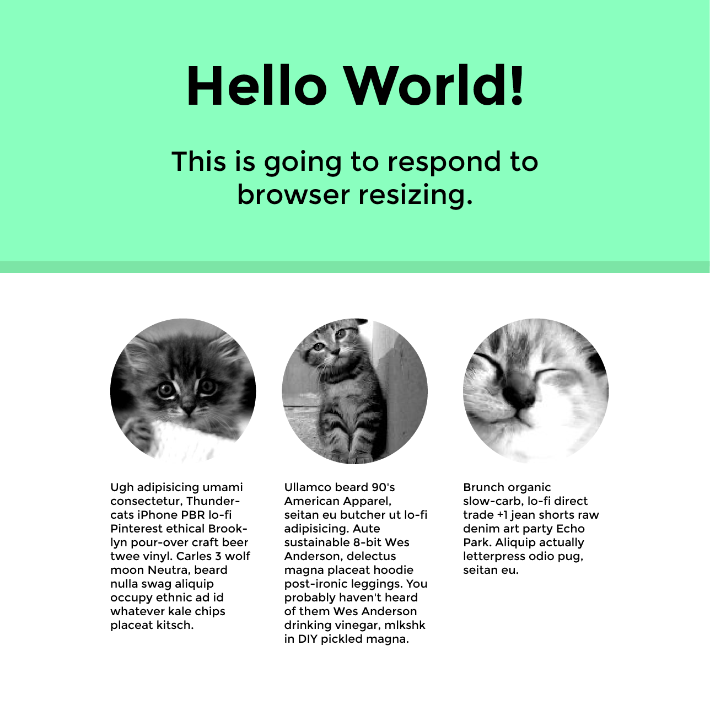

Responsive Design
Class 2
Testing, design, images
Testing, design, images

Why I don't use:
margin: 0 auto;
Instead use:
margin-left: auto;
margin-right: auto;
Padding versus setting a max-width
Read through your code and see if you could have implemented it in a cleaner way now. Now that you know one way to structure your CSS, are there other ways that would be easier to read?
In the browser
On real devices (ifconfig if you're using a server, MAMP, WAMP)

Did anything not appear how you wanted it to?
<meta content='width=device-width, minimum-scale=1.0, maximum-scale=1.0' name='viewport'>
Why we are seeing more flat design
Don't fight the web, work with it!
Do as much of the design through CSS as possible and if images are needed, they must be flexible
No hover states for touch screens, so don't hide content that can only be viewed by hover
RWD trends and patterns (background cover images, fixed headers, infinite scroll)
Retina support
Why SVG's are the best
Optimized for mobile to desktop
If used as background images, they don't need to be loaded at all screen sizes
Get started on this and we will finish it up next class.
Images from Place Kitten
Pay attention to what size images you are serving up.
We will revisit responsive images next class.